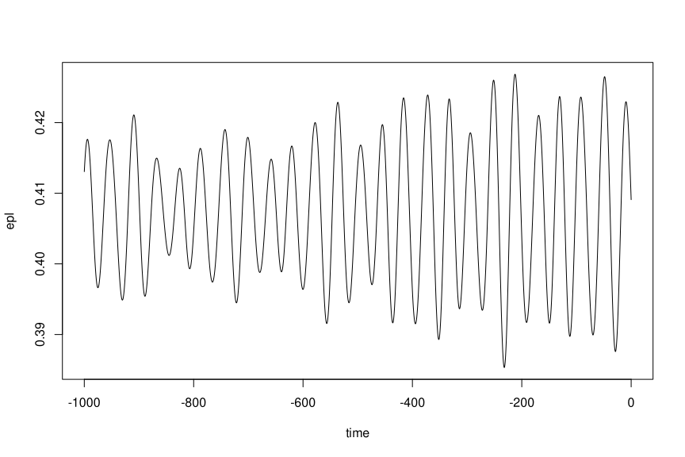

Easily calculate precession and obliquity from an astronomical solution (AS, defaults to ZB18a from Zeebe and Lourens (2019)) and assumed or reconstructed values for tidal dissipation (Td) and dynamical ellipticity (Ed). This is a translation and adaptation of the C-code in the supplementary material to Zeebe and Lourens (2022), with further details on the methodology described in Zeebe (2022). The name of the C-routine is snvec, which refers to the key units of computation: spin vector s and orbit normal vector n.
Installation
You can install snvecR like so:
install.packages("snvecR")To use the development version of the package, use:
remotes::install_github("japhir/snvecR")Then load it with:
Loading Astronomical Solutions
The function get_solution() easily downloads astronomical solutions from Richard Zeebe’s website and stores them locally so that they can be reused conveniently. Note that when run interactively, the function will ask for confirmation to store the files to the cache directory (which can be customized with options(snvecR.cachedir = "/path/to/cache")). See the documentation for more information (?snvecR::get_solution).
# full solution needed for snvec below
sol <- get_solution("full-ZB18a")
#> ℹ The astronomical solution "full-ZB18a" has not been cached.
#> ℹ Reading 'full-ZB18a.dat' from website <http://www.soest.hawaii.edu/oceanography/faculty/zeebe_files/Astro/PrecTilt/OS/ZB18a/ems-plan3.dat>.
#> ℹ Calculating helper columns.
#> ℹ The cache directory is '/tmp/RtmpJey6IU/snvecR2a1db04482e229'.
#> ℹ Saved astronomical solution with helper columns 'full-ZB18a.rds' to cache.
#> ℹ Future calls to `get_solution("full-ZB18a")` will read from the cache.
#> ! If you want to read from scratch, specify `force = TRUE`.
# eccentricity solutions
ZB18a <- get_solution("ZB18a-300")
#> ℹ The astronomical solution "ZB18a-300" has not been cached.
#> ℹ Reading 'ZB18a-300.dat' from website <http://www.soest.hawaii.edu/oceanography/faculty/zeebe_files/Astro/300Myr/ZB18a.dat>.
#> ℹ Flipped time for "ZB18a-300" so that it is in negative kyr.
#> ℹ The cache directory is '/tmp/RtmpJey6IU/snvecR2a1db04482e229'.
#> ℹ Saved astronomical solution with helper columns 'ZB18a-300.rds' to cache.
#> ℹ Future calls to `get_solution("ZB18a-300")` will read from the cache.
#> ! If you want to read from scratch, specify `force = TRUE`.
ZB20a <- get_solution("ZB20a")
#> ℹ The astronomical solution "ZB20a" has not been cached.
#> ℹ Reading 'ZB20a.dat' from website <http://www.soest.hawaii.edu/oceanography/faculty/zeebe_files/Astro/300Myr/ZB20a.dat>.
#> ℹ Flipped time for "ZB20a" so that it is in negative kyr.
#> ℹ The cache directory is '/tmp/RtmpJey6IU/snvecR2a1db04482e229'.
#> ℹ Saved astronomical solution with helper columns 'ZB20a.rds' to cache.
#> ℹ Future calls to `get_solution("ZB20a")` will read from the cache.
#> ! If you want to read from scratch, specify `force = TRUE`.
# a pre-computed precession-tilt solution (PT)
ZB18a_1_1 <- get_solution("PT-ZB18a(1,1)")
#> ℹ The astronomical solution "PT-ZB18a(1.0000,1.0000)" has not been cached.
#> ℹ Reading 'PT-ZB18a(1.0000,1.0000).dat' from website <http://www.soest.hawaii.edu/oceanography/faculty/zeebe_files/Astro/PrecTilt/ZB18a/asc/PT.De1.0000Td1.0000.dat>.
#> ℹ The cache directory is '/tmp/RtmpJey6IU/snvecR2a1db04482e229'.
#> ℹ Saved astronomical solution with helper columns 'PT-ZB18a(1.0000,1.0000).rds'
#> to cache.
#> ℹ Future calls to `get_solution("PT-ZB18a(1.0000,1.0000)")` will read from the
#> cache.
#> ! If you want to read from scratch, specify `force = TRUE`.
# the 3.5 Gyr solutions, e.g. number 5
ZB23.R05 <- get_solution("ZB23.R05")
#> ℹ The astronomical solution "ZB23.R05" has not been cached.
#> ℹ Reading 'ZB23.R05.dat' from website <http://www.soest.hawaii.edu/oceanography/faculty/zeebe_files/Astro/3.5Gyr/ZB23-N64-eiop/ZB23.R05.eiop.dat.zip>.
#> Downloading any of the ZB23.RXX solutions will take some time.
#> Zip files are about 154 MB.
#> Continue downloading and caching? (Yes/no/cancel)
#> ℹ The cache directory is '/home/japhir/.cache/R/snvecR'.
#> ℹ Saved astronomical solution with helper columns 'ZB23.R05.rds' to cache.
#> ℹ Future calls to `get_solution("ZB23.R05")` will read from the cache.
#> ! If you want to read from scratch, specify `force = TRUE`.Calculating Precession and Obliquity
Here’s the snvec() function that calculates climatic precession and obliquity from an orbital solution input and values for tidal dissipation (Td) and dynamical ellipticity (Ed).
solution <- snvec(tend = -1000, # final timestep in kyr
ed = 1, # dynamical ellipticity, normalized to modern
td = 0, # tidal dissipation, normalized to modern
astronomical_solution = "full-ZB18a", # see ?full_ZB18a for details
tres = -0.4 # timestep resolution in kyr (so this is 400 years)
)
#> This is snvecR VERSION: 3.10.0.9000 2025-03-05
#> Richard E. Zeebe
#> Ilja J. Kocken
#>
#> Integration parameters:
#> • `tend` = -1000 kyr
#> • `ed` = 1
#> • `td` = 0
#> • `astronomical_solution` = "full-ZB18a"
#> • `os_ref_frame` = "HCI"
#> • `os_omt` = defaulting to 75.594
#> • `os_inct` = defaulting to 7.155
#> • `tres` = -0.4 kyr
#> • `atol` = 1e-05
#> • `rtol` = 0
#> • `solver` = "vode"
#> ℹ started at "2025-03-05 15:39:44.459539"
#> Final values:
#> • s[1][2][3]: 0.404184487124565, -0.0537555129057148, and 0.913036138471423
#> • s-error = |s|-1: -5.51290422495798e-05
#> Final values:
#> • obliquity: 0.413060472710089 rad
#> • precession: -0.562357122261026 rad
#> ℹ stopped at "2025-03-05 15:39:45.425669"
#> ℹ total duration: 0.97To quickly save out the results for further study to CSV1:
write.csv(solution, "ZB18a_ed-1.0_td-0.0.csv")see ?snvec for further documentation.
Here we create a quick plot of the obliquity:
plot(epl ~ time, data = solution, type = 'l')
Or if you want to make a slightly fancier plot of the calculated climatic precession with the eccentricity envelope:
library(ggplot2)
solution |>
ggplot(aes(x = time, y = cp)) +
labs(x = "Time (kyr)", y = "(-)", colour = "Orbital Element") +
# plot climatic precession
geom_line(aes(colour = "Climatic Precession")) +
# add the eccentricity envelope
geom_line(aes(y = ee, colour = "Eccentricity"),
data = get_solution() |> dplyr::filter(time > -1000)) +
scale_color_discrete(type = c("skyblue", "black")) +
theme(legend.position = "inside", legend.position.inside = c(.9, .95))
Contributing
Contributions are more than welcome! If something doesn’t work the way you expect and you don’t know how to fix it, write an issue. If you do know how to fix it, feel free to create a pull request!
References
Zeebe, R. E., & Lourens, L. J. (2019). Solar System chaos and the Paleocene–Eocene boundary age constrained by geology and astronomy. Science, 365(6456), 926–929. doi:10.1126/science.aax0612.
Zeebe, R. E., & Lourens, L. J. (2022). A deep-time dating tool for paleo-applications utilizing obliquity and precession cycles: The role of dynamical ellipticity and tidal dissipation. Paleoceanography and Paleoclimatology, e2021PA004349. doi:10.1029/2021PA004349.
Zeebe, R. E. (2022). Reduced Variations in Earth’s and Mars’ Orbital Inclination and Earth’s Obliquity from 58 to 48 Myr ago due to Solar System Chaos. The Astronomical Journal, 164(3), doi:10.3847/1538-3881/ac80f8.
Wikipedia page on Orbital Elements: https://en.wikipedia.org/wiki/Orbital_elements